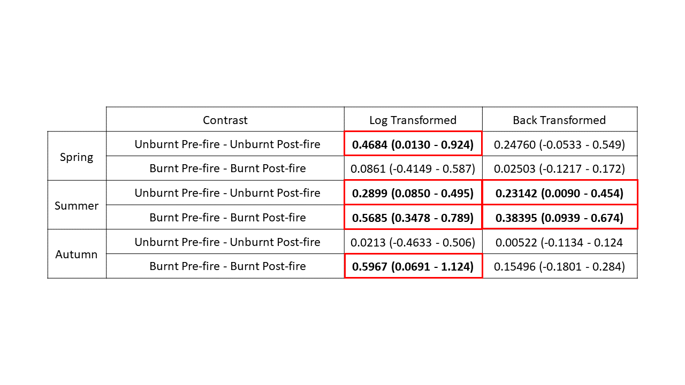

8 - Interpret and Present the Numerical Output of the Model
Preparing the Data
library(glmmTMB)
library(ggplot2)
library(car)
library(ggeffects)
library(effects)
library(broom)
library(broom.mixed)
library(emmeans)
#Reading in the Final Clean Data from cleaning script 7
Bear<-read.csv("./Data/7_BlackAdultClean.csv",header=TRUE,stringsAsFactors = FALSE)
# Designating the categorical predictors as factors which will allow us to order the factor levels within the model summary output
Bear$Season<-as.factor(Bear$Season)
Bear$Status<-as.factor(Bear$Status)
Bear$Region<-as.factor(Bear$Region)
Bear$Season<- factor(Bear$Season,levels = c("Spring","Summer","Autumn"))
Bear$Status<-relevel(Bear$Status,"Prefire")
Bear$Region<-relevel(Bear$Region,"Unburnt")
#Creating final model. Model selection found in script 1_AdultBlackBearModelFit
FinalModel<-glmmTMB(Lone_Adult ~ Region + Season + Status + Number_of_Groups + Number_of_Groups:Season + Season:Status + Season:Region + Region:Status + Season:Region:Status +
offset(log(Effort_per_week)) + (1|Camera_Code),
data = Bear,
ziformula = ~Season,
na.action = na.pass,
family = nbinom1(link = "log"))The Model Summary
options(width = 100)
summary(FinalModel)## Family: nbinom1 ( log )
## Formula:
## Lone_Adult ~ Region + Season + Status + Number_of_Groups + Number_of_Groups:Season +
## Season:Status + Season:Region + Region:Status + Season:Region:Status +
## offset(log(Effort_per_week)) + (1 | Camera_Code)
## Zero inflation: ~Season
## Data: Bear
##
## AIC BIC logLik deviance df.resid
## 8177.5 8308.7 -4068.8 8137.5 5206
##
## Random effects:
##
## Conditional model:
## Groups Name Variance Std.Dev.
## Camera_Code (Intercept) 0.8119 0.9011
## Number of obs: 5226, groups: Camera_Code, 26
##
## Dispersion parameter for nbinom1 family (): 0.564
##
## Conditional model:
## Estimate Std. Error z value Pr(>|z|)
## (Intercept) -2.501708 0.297650 -8.405 < 2e-16 ***
## RegionBurnt -0.780231 0.401609 -1.943 0.052044 .
## SeasonSummer 0.509452 0.167306 3.045 0.002327 **
## SeasonAutumn -0.835532 0.230132 -3.631 0.000283 ***
## StatusPostfire -0.468390 0.177219 -2.643 0.008217 **
## Number_of_Groups 0.022201 0.006280 3.535 0.000408 ***
## SeasonSummer:Number_of_Groups -0.024291 0.006182 -3.930 8.51e-05 ***
## SeasonAutumn:Number_of_Groups -0.020087 0.006850 -2.932 0.003363 **
## SeasonSummer:StatusPostfire 0.178515 0.194352 0.919 0.358350
## SeasonAutumn:StatusPostfire 0.447061 0.258648 1.728 0.083907 .
## RegionBurnt:SeasonSummer 0.742372 0.199203 3.727 0.000194 ***
## RegionBurnt:SeasonAutumn 1.113030 0.253152 4.397 1.10e-05 ***
## RegionBurnt:StatusPostfire 0.382298 0.264329 1.446 0.148094
## RegionBurnt:SeasonSummer:StatusPostfire -0.660895 0.288971 -2.287 0.022192 *
## RegionBurnt:SeasonAutumn:StatusPostfire -0.957644 0.384019 -2.494 0.012640 *
## ---
## Signif. codes: 0 '***' 0.001 '**' 0.01 '*' 0.05 '.' 0.1 ' ' 1
##
## Zero-inflation model:
## Estimate Std. Error z value Pr(>|z|)
## (Intercept) 0.1583 0.1883 0.841 0.4003
## SeasonSummer -2.7365 0.3748 -7.301 2.86e-13 ***
## SeasonAutumn -0.7621 0.3535 -2.156 0.0311 *
## ---
## Signif. codes: 0 '***' 0.001 '**' 0.01 '*' 0.05 '.' 0.1 ' ' 1This summary is messy and difficult to interpret. Instead we will conduct post-hoc testing using the package emmaeans (Lenth 2021) to determine the effect of the interaction terms Region:Status:Season and human groups:season.
Estimated Marginal Means
Marginal means are values which are taken from statistical models and they represent the mean of the response variable for each level of categorical predictor variable. Due to the fact that these marginal means are taken from the statistical model and not the data itself they will most likely differ from arithmetic means of the data.
More information can be found here https://cran.r-project.org/web/packages/emmeans/vignettes/basics.html
Creating the Estimated Marginal Means
Not back transformed
# Creating a emmeans object summary for the region:status interaction in each season.
emm1<-emmeans(FinalModel,spec = ~ Region:Status|Season)
summary(emm1)## Season = Spring:
## Region Status emmean SE df lower.CL upper.CL
## Unburnt Prefire -0.4124 0.293 5206 -0.987 0.162
## Burnt Prefire -1.1927 0.297 5206 -1.776 -0.610
## Unburnt Postfire -0.8808 0.296 5206 -1.460 -0.301
## Burnt Postfire -1.2788 0.299 5206 -1.864 -0.693
##
## Season = Summer:
## Region Status emmean SE df lower.CL upper.CL
## Unburnt Prefire -0.0838 0.258 5206 -0.590 0.423
## Burnt Prefire -0.1216 0.258 5206 -0.628 0.385
## Unburnt Postfire -0.3736 0.260 5206 -0.883 0.136
## Burnt Postfire -0.6901 0.262 5206 -1.204 -0.176
##
## Season = Autumn:
## Region Status emmean SE df lower.CL upper.CL
## Unburnt Prefire -1.3975 0.304 5206 -1.994 -0.801
## Burnt Prefire -1.0647 0.302 5206 -1.656 -0.473
## Unburnt Postfire -1.4188 0.306 5206 -2.019 -0.818
## Burnt Postfire -1.6613 0.328 5206 -2.304 -1.018
##
## Results are given on the log (not the response) scale.
## Confidence level used: 0.95The above output shows the emmeans as produced on the link scale, therefore these values are log-transformed.
Back transformed
# Creating a emmeans object which contrasts the response variable values of region and status for each season. This represents the BACKTRANSFORMED results.
emm3<-emmeans(FinalModel,spec = ~ Region:Status|Season, type = "response")
Z<-contrast(regrid(emm3), method = "pairwise")
summary(emm3)## Season = Spring:
## Region Status response SE df lower.CL upper.CL
## Unburnt Prefire 0.662 0.1939 5206 0.3729 1.175
## Burnt Prefire 0.303 0.0902 5206 0.1694 0.543
## Unburnt Postfire 0.414 0.1225 5206 0.2322 0.740
## Burnt Postfire 0.278 0.0831 5206 0.1550 0.500
##
## Season = Summer:
## Region Status response SE df lower.CL upper.CL
## Unburnt Prefire 0.920 0.2377 5206 0.5541 1.526
## Burnt Prefire 0.885 0.2289 5206 0.5335 1.470
## Unburnt Postfire 0.688 0.1788 5206 0.4136 1.145
## Burnt Postfire 0.502 0.1316 5206 0.2999 0.839
##
## Season = Autumn:
## Region Status response SE df lower.CL upper.CL
## Unburnt Prefire 0.247 0.0752 5206 0.1362 0.449
## Burnt Prefire 0.345 0.1040 5206 0.1909 0.623
## Unburnt Postfire 0.242 0.0741 5206 0.1328 0.441
## Burnt Postfire 0.190 0.0623 5206 0.0998 0.361
##
## Confidence level used: 0.95
## Intervals are back-transformed from the log scaleThe above output shows the emmeans as produced on the resoonse scale, therefore these values have been back transformed from the log scale.
Contrasting the Three-way Interaction of Region:Status:Season
# Presenting the contrasts with 95% confidence intervals
emm1<-emmeans(FinalModel,spec = ~ Region:Status|Season)
X<-contrast(emm1, method = "pairwise")
confint(X)## Season = Spring:
## contrast estimate SE df lower.CL upper.CL
## Unburnt Prefire - Burnt Prefire 0.7802 0.4016 5206 -0.2518 1.812
## Unburnt Prefire - Unburnt Postfire 0.4684 0.1772 5206 0.0130 0.924
## Unburnt Prefire - Burnt Postfire 0.8663 0.4025 5206 -0.1680 1.901
## Burnt Prefire - Unburnt Postfire -0.3118 0.4037 5206 -1.3494 0.726
## Burnt Prefire - Burnt Postfire 0.0861 0.1950 5206 -0.4149 0.587
## Unburnt Postfire - Burnt Postfire 0.3979 0.4052 5206 -0.6433 1.439
##
## Season = Summer:
## contrast estimate SE df lower.CL upper.CL
## Unburnt Prefire - Burnt Prefire 0.0379 0.3641 5206 -0.8977 0.973
## Unburnt Prefire - Unburnt Postfire 0.2899 0.0797 5206 0.0850 0.495
## Unburnt Prefire - Burnt Postfire 0.6063 0.3665 5206 -0.3354 1.548
## Burnt Prefire - Unburnt Postfire 0.2520 0.3648 5206 -0.6855 1.189
## Burnt Prefire - Burnt Postfire 0.5685 0.0859 5206 0.3478 0.789
## Unburnt Postfire - Burnt Postfire 0.3165 0.3673 5206 -0.6275 1.260
##
## Season = Autumn:
## contrast estimate SE df lower.CL upper.CL
## Unburnt Prefire - Burnt Prefire -0.3328 0.3949 5206 -1.3476 0.682
## Unburnt Prefire - Unburnt Postfire 0.0213 0.1886 5206 -0.4633 0.506
## Unburnt Prefire - Burnt Postfire 0.2639 0.4145 5206 -0.8014 1.329
## Burnt Prefire - Unburnt Postfire 0.3541 0.3990 5206 -0.6712 1.379
## Burnt Prefire - Burnt Postfire 0.5967 0.2053 5206 0.0691 1.124
## Unburnt Postfire - Burnt Postfire 0.2425 0.4185 5206 -0.8329 1.318
##
## Results are given on the log (not the response) scale.
## Confidence level used: 0.95
## Conf-level adjustment: tukey method for comparing a family of 4 estimates# Presenting the results with 95% confidence intervals
emm3<-emmeans(FinalModel,spec = ~ Region:Status|Season, type = "response")
Z<-contrast(regrid(emm3), method = "pairwise")
confint(Z)## Season = Spring:
## contrast estimate SE df lower.CL upper.CL
## Unburnt Prefire - Burnt Prefire 0.35863 0.2077 5206 -0.17514 0.892
## Unburnt Prefire - Unburnt Postfire 0.24760 0.1171 5206 -0.05333 0.549
## Unburnt Prefire - Burnt Postfire 0.38366 0.2052 5206 -0.14370 0.911
## Burnt Prefire - Unburnt Postfire -0.11103 0.1468 5206 -0.48817 0.266
## Burnt Prefire - Burnt Postfire 0.02503 0.0571 5206 -0.12171 0.172
## Unburnt Postfire - Burnt Postfire 0.13606 0.1431 5206 -0.23175 0.504
##
## Season = Summer:
## contrast estimate SE df lower.CL upper.CL
## Unburnt Prefire - Burnt Prefire 0.03417 0.3286 5206 -0.81040 0.879
## Unburnt Prefire - Unburnt Postfire 0.23142 0.0866 5206 0.00897 0.454
## Unburnt Prefire - Burnt Postfire 0.41812 0.2706 5206 -0.27718 1.113
## Burnt Prefire - Unburnt Postfire 0.19726 0.2891 5206 -0.54581 0.940
## Burnt Prefire - Burnt Postfire 0.38395 0.1129 5206 0.09394 0.674
## Unburnt Postfire - Burnt Postfire 0.18670 0.2209 5206 -0.38098 0.754
##
## Season = Autumn:
## contrast estimate SE df lower.CL upper.CL
## Unburnt Prefire - Burnt Prefire -0.09762 0.1188 5206 -0.40304 0.208
## Unburnt Prefire - Unburnt Postfire 0.00522 0.0461 5206 -0.11335 0.124
## Unburnt Prefire - Burnt Postfire 0.05734 0.0906 5206 -0.17547 0.290
## Burnt Prefire - Unburnt Postfire 0.10284 0.1191 5206 -0.20315 0.409
## Burnt Prefire - Burnt Postfire 0.15496 0.0667 5206 -0.01653 0.326
## Unburnt Postfire - Burnt Postfire 0.05212 0.0904 5206 -0.18010 0.284
##
## Confidence level used: 0.95
## Conf-level adjustment: tukey method for comparing a family of 4 estimates
Interpretation
In the above table we can see that the number of significant estimate values differ between the log transformed and back transformed estimated marginal means. In the log transformed marginal mean contrasts we see significant estimates in the spring for the unburnt region, in the summer for both regions and in autumn for the burnt region. However, in the back transformed contrasts we only see significant estimates in the summer in both unburnt and burnt regions. In all the above cases the number of bear events has decreased in the postfire landscape as evident by the postivie estimate value. The postive estimate shows a decrease in bear events becuase the contrast is compating the unburnt region to the burnt region.
Interpreting the interaction effect of Season:Number of Groups
Using the emtrends function from the (Lenth 2021) function we can calculate the effect of the number of human groups on bear activity for each season.
emtrends(FinalModel, pairwise ~ Season, var = "Number_of_Groups")## $emtrends
## Season Number_of_Groups.trend SE df lower.CL upper.CL
## Spring 0.02220 0.00628 5206 0.00989 0.034512
## Summer -0.00209 0.00114 5206 -0.00433 0.000147
## Autumn 0.00211 0.00317 5206 -0.00411 0.008335
##
## Results are averaged over the levels of: Region, Status
## Confidence level used: 0.95
##
## $contrasts
## contrast estimate SE df t.ratio p.value
## Spring - Summer 0.0243 0.00618 5206 3.930 0.0003
## Spring - Autumn 0.0201 0.00685 5206 2.932 0.0095
## Summer - Autumn -0.0042 0.00323 5206 -1.301 0.3947
##
## Results are averaged over the levels of: Region, Status
## P value adjustment: tukey method for comparing a family of 3 estimatesInterpretation
We can see that both spring and autumn have positive relationships between the number of human groups using a trail and the number of bears using the trail. Summer meanwhile shows a negative trend which is much more expected. Looking at the confidence intervals the spring season is the only season which shows a significant relationship between human groups and bear groups. Meanwhile if we look at the contrasts we can see that the effect seen in spring is significantly different than the effects seen in both summer and autumn while the contrast between autumn and summer appears to not be significant.
Effect Size
The following code calculates the effect sizes of each contrast using the function eff_size from the package (Lenth 2021).
EFF1<-eff_size(emm3, sigma = sigma(FinalModel), edf = Inf, method = "pairwise")
summary(EFF1)## Season = Spring:
## contrast effect.size SE df lower.CL upper.CL
## Unburnt Prefire - Burnt Prefire 1.3823 0.712 5206 -0.0126 2.777
## Unburnt Prefire - Unburnt Postfire 0.8298 0.314 5206 0.2143 1.445
## Unburnt Prefire - Burnt Postfire 1.5349 0.713 5206 0.1369 2.933
## Burnt Prefire - Unburnt Postfire -0.5525 0.715 5206 -1.9547 0.850
## Burnt Prefire - Burnt Postfire 0.1525 0.345 5206 -0.5246 0.830
## Unburnt Postfire - Burnt Postfire 0.7050 0.718 5206 -0.7022 2.112
##
## Season = Summer:
## contrast effect.size SE df lower.CL upper.CL
## Unburnt Prefire - Burnt Prefire 0.0671 0.645 5206 -1.1974 1.332
## Unburnt Prefire - Unburnt Postfire 0.5136 0.141 5206 0.2367 0.790
## Unburnt Prefire - Burnt Postfire 1.0742 0.649 5206 -0.1986 2.347
## Burnt Prefire - Unburnt Postfire 0.4465 0.646 5206 -0.8205 1.714
## Burnt Prefire - Burnt Postfire 1.0072 0.152 5206 0.7089 1.305
## Unburnt Postfire - Burnt Postfire 0.5607 0.651 5206 -0.7151 1.836
##
## Season = Autumn:
## contrast effect.size SE df lower.CL upper.CL
## Unburnt Prefire - Burnt Prefire -0.5896 0.700 5206 -1.9612 0.782
## Unburnt Prefire - Unburnt Postfire 0.0378 0.334 5206 -0.6172 0.693
## Unburnt Prefire - Burnt Postfire 0.4675 0.734 5206 -0.9723 1.907
## Burnt Prefire - Unburnt Postfire 0.6274 0.707 5206 -0.7584 2.013
## Burnt Prefire - Burnt Postfire 1.0571 0.364 5206 0.3441 1.770
## Unburnt Postfire - Burnt Postfire 0.4297 0.741 5206 -1.0238 1.883
##
## sigma used for effect sizes: 0.5644
## Confidence level used: 0.95Interpretation
I am unsure how to interpret the results from the effect size function at this time. I had originally thought that by back transforming my estimated marginal means (as above) I had received my effect sizes, however, these differ from the effect size function found above. I assume that these values should be the same however that may be incorrect and I will look into that further.
Joint Test
The joint test in the emmeans package is similar in nature to a “Type-III ANOVA”. The main effects are calculated from families of contrasts and the interaction effects are interaction contrasts. (Lenth 2021)
Joint test conducted on all predictors and interactions present in the model.
joint_tests(FinalModel)## model term df1 df2 F.ratio p.value
## Region 1 5206 0.440 0.5071
## Season 2 5206 6.036 0.0024
## Status 1 5206 25.607 <.0001
## Number_of_Groups 1 5206 8.687 0.0032
## Region:Season 2 5206 5.663 0.0035
## Region:Status 1 5206 1.374 0.2413
## Season:Status 2 5206 0.764 0.4659
## Season:Number_of_Groups 2 5206 8.361 0.0002
## Region:Season:Status 2 5206 3.537 0.02920.0.1 Interpretation
As I understand it this ANOVA like table tests for the significance of each effect in the model. For example the term region it’s self is not a significant predictor of bear events while status is a significant predictor. Ultimately in this table the three way interaction of Region:Season:Status and two way interaction of Season:Number_of_Groups are the most important rows to look at.
Joint test conducted on all predictors and interactions present in the model using the predictor of season to group results.
joint_tests(FinalModel, by = "Season")## Season = Spring:
## model term df1 df2 F.ratio p.value
## Region 1 5206 2.389 0.1222
## Status 1 5206 4.458 0.0348
## Number_of_Groups 1 5206 12.497 0.0004
## Region:Status 1 5206 2.092 0.1482
##
## Season = Summer:
## model term df1 df2 F.ratio p.value
## Region 1 5206 0.241 0.6236
## Status 1 5206 53.967 <.0001
## Number_of_Groups 1 5206 3.355 0.0671
## Region:Status 1 5206 5.623 0.0178
##
## Season = Autumn:
## model term df1 df2 F.ratio p.value
## Region 1 5206 0.014 0.9060
## Status 1 5206 4.919 0.0266
## Number_of_Groups 1 5206 0.444 0.5053
## Region:Status 1 5206 4.257 0.03910.0.2 Interpretation
This table is more insightful as it breaks down the significance of each predictor and the two way interaction of region:status (the fire effect) for each season. We can see that the fire effect is not significant in the spring season but is significant in both the summer and autumn seasons. We can also see that status (time-period) is a significant predictor in all seasons. Number of human groups is significant in spring and summer but not autumn.
Contrasting all other included interactions
RegionSeason<-emmeans(FinalModel,spec = ~ Region:Season, type = "response")
RSea<-contrast(regrid(RegionSeason), method = "pairwise")
confint(RSea)## contrast estimate SE df lower.CL upper.CL
## Unburnt Spring - Burnt Spring 0.2332 0.1623 5206 -0.22958 0.6959
## Unburnt Spring - Unburnt Summer -0.2718 0.1006 5206 -0.55866 0.0152
## Unburnt Spring - Burnt Summer -0.1426 0.2251 5206 -0.78422 0.4990
## Unburnt Spring - Unburnt Autumn 0.2792 0.1012 5206 -0.00925 0.5677
## Unburnt Spring - Burnt Autumn 0.2679 0.1648 5206 -0.20188 0.7377
## Burnt Spring - Unburnt Summer -0.5049 0.2193 5206 -1.12998 0.1201
## Burnt Spring - Burnt Summer -0.3758 0.1060 5206 -0.67796 -0.0736
## Burnt Spring - Unburnt Autumn 0.0460 0.1082 5206 -0.26240 0.3545
## Burnt Spring - Burnt Autumn 0.0347 0.0552 5206 -0.12262 0.1921
## Unburnt Summer - Burnt Summer 0.1292 0.2648 5206 -0.62576 0.8841
## Unburnt Summer - Unburnt Autumn 0.5510 0.1478 5206 0.12974 0.9722
## Unburnt Summer - Burnt Autumn 0.5397 0.2174 5206 -0.08009 1.1594
## Burnt Summer - Unburnt Autumn 0.4218 0.1853 5206 -0.10648 0.9501
## Burnt Summer - Burnt Autumn 0.4105 0.1163 5206 0.07893 0.7421
## Unburnt Autumn - Burnt Autumn -0.0113 0.0958 5206 -0.28426 0.2617
##
## Results are averaged over the levels of: Status
## Confidence level used: 0.95
## Conf-level adjustment: tukey method for comparing a family of 6 estimatesStatusSeason<-emmeans(FinalModel,spec = ~ Status:Season, type = "response")
StatSea<-contrast(regrid(StatusSeason), method = "pairwise")
confint(StatSea)## contrast estimate SE df lower.CL upper.CL
## Prefire Spring - Postfire Spring 0.1085 0.0562 5206 -0.0517 0.2687
## Prefire Spring - Prefire Summer -0.4542 0.1042 5206 -0.7512 -0.1573
## Prefire Spring - Postfire Summer -0.1393 0.0666 5206 -0.3292 0.0506
## Prefire Spring - Prefire Autumn 0.1562 0.0737 5206 -0.0538 0.3662
## Prefire Spring - Postfire Autumn 0.2338 0.0764 5206 0.0160 0.4516
## Postfire Spring - Prefire Summer -0.5627 0.1150 5206 -0.8906 -0.2348
## Postfire Spring - Postfire Summer -0.2478 0.0677 5206 -0.4409 -0.0548
## Postfire Spring - Prefire Autumn 0.0477 0.0596 5206 -0.1222 0.2175
## Postfire Spring - Postfire Autumn 0.1253 0.0583 5206 -0.0408 0.2914
## Prefire Summer - Postfire Summer 0.3149 0.0708 5206 0.1131 0.5167
## Prefire Summer - Prefire Autumn 0.6104 0.1232 5206 0.2592 0.9617
## Prefire Summer - Postfire Autumn 0.6880 0.1333 5206 0.3080 1.0681
## Postfire Summer - Prefire Autumn 0.2955 0.0742 5206 0.0841 0.5069
## Postfire Summer - Postfire Autumn 0.3731 0.0807 5206 0.1430 0.6033
## Prefire Autumn - Postfire Autumn 0.0776 0.0383 5206 -0.0314 0.1867
##
## Results are averaged over the levels of: Region
## Confidence level used: 0.95
## Conf-level adjustment: tukey method for comparing a family of 6 estimatesRegionStatus<-emmeans(FinalModel,spec = ~ Region:Status, type = "response")
RStat<-contrast(regrid(RegionStatus), method = "pairwise")
confint(RStat)## contrast estimate SE df lower.CL upper.CL
## Unburnt Prefire - Burnt Prefire 0.0795 0.1811 5206 -0.3860 0.545
## Unburnt Prefire - Unburnt Postfire 0.1217 0.0529 5206 -0.0142 0.258
## Unburnt Prefire - Burnt Postfire 0.2338 0.1591 5206 -0.1750 0.643
## Burnt Prefire - Unburnt Postfire 0.0423 0.1587 5206 -0.3657 0.450
## Burnt Prefire - Burnt Postfire 0.1543 0.0538 5206 0.0160 0.293
## Unburnt Postfire - Burnt Postfire 0.1120 0.1326 5206 -0.2287 0.453
##
## Results are averaged over the levels of: Season
## Confidence level used: 0.95
## Conf-level adjustment: tukey method for comparing a family of 4 estimates